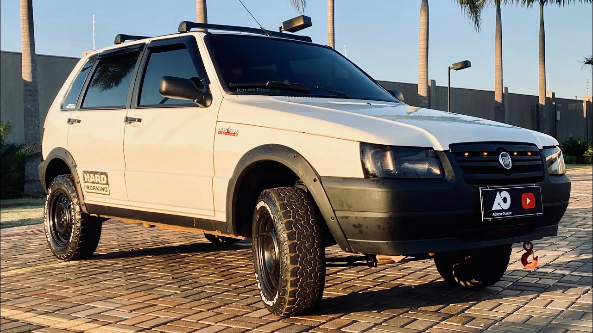

5 Motivos para ter um Fiat Uno
O Fiat Uno é um icônico modelo de carro produzido pela Fiat desde 1983. Ao longo dos anos, o Fiat Uno conquistou uma legião de fãs por sua versatilidade, design compacto e econômico, tornando-se um dos modelos mais populares nas estradas. Com sua presença marcante e duradoura, o Fiat Uno continua a ser uma opção atraente para quem busca um veículo prático e acessível.

- Economia de combustível: O Fiat Uno é conhecido por seu baixo consumo de combustível, o que o torna uma escolha econômica para o dia a dia. Seu motor eficiente e leve oferece uma excelente relação entre desempenho e consumo, permitindo que você percorra mais quilômetros com menos gastos.
- Facilidade de manutenção: Com uma longa história e presença no mercado, o Fiat Uno tem uma ampla rede de concessionárias e oficinas especializadas em todo o país. Isso facilita a manutenção e o reparo do veículo, além de tornar as peças de reposição mais acessíveis e disponíveis.
- Design compacto e ágil: O Fiat Uno possui um design compacto e ágil, o que o torna perfeito para se locomover em áreas urbanas e estacionar em espaços apertados. Sua dirigibilidade responsiva e a facilidade de manobra tornam-no uma opção prática para enfrentar o trânsito diário.
- Versatilidade e espaço interno: Apesar de seu tamanho compacto, o Fiat Uno oferece um interior espaçoso e flexível. Com assentos rebatíveis e configurações inteligentes, o Uno proporciona espaço suficiente para passageiros e bagagens, tornando-o um carro versátil para viagens e tarefas do cotidiano.
- Valor de revenda: O Fiat Uno mantém um bom valor de revenda no mercado automobilístico. Sua popularidade e demanda contínuas garantem que, ao decidir vender seu Uno no futuro, você terá uma boa chance de obter um retorno satisfatório do investimento inicial.
Desenvolvido por Fernando M. dos Santos - 2023